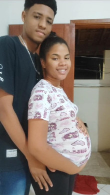
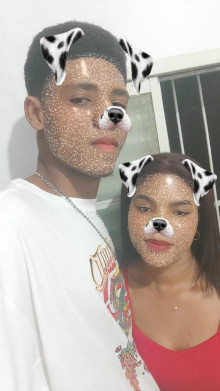
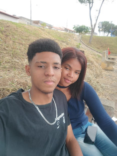

Dia 02/09/2023 foi a primeira vez que te vi na vida e mal sabia que um dia viria a te chamar de minha namorada. Quando te vi pela primeira vez pensei "que mina gatinha" mas não tinha mais intenções com vc. No dia seguinte eu faltei a aula porque estava passando mal. Mal sabia eu que isso seria um dos motivos da gente está namorando hoje, porque por causa disso eu troquei de lugar e fui sentar perto de você. Isso querendo ou não fez a gente se aproximar né, você fala que eu tinha cara de bunda e não olhava pra você kkkkk, é que na verdade eu era e ainda sou muito tímido então eu ficava no celular pra não ter q olhar pra ninguém. Mas ao decorrer dos dias eu fui me soltando um pouquinho e assim fomos conversando mais Eu comecei a te achar não só gata como também uma mina dahora de se conversar , o que foi me gerando um interesse a mais em você
Querendo ou não o jacaré também foi uma influência nisso, como naquele dia do primeiro trabalho q fizemos lá de por a lâmpada
.jpeg)

No final da aula a gente tava esperando pra ir embora e você tava na parede , resolvi ir lá perto de você pra tentar conversar só que falei 2 palavras e chegou a Camille pra falar e aí você me deixou de lado pra conversar com ela 🙄 kkkkkkkkkkk
O outro trabalho que aproximou a gente foi o mapa de risco onde a gente conversou mais

E ali eu senti realmente vontade de me aproximar de você, se é que você me entende mo 🤪 hahahahahah
Os dias foram passando a gente conversando e quando estávamos se aproximando mais... Você decide sair do Senai. No dia eu tava meio ansioso esperando você chegar pra conversar com você e foi me dando uma agonia de não chegar. Até que eu e o jacaré decidimos mandar mensagem pra você e recebemos uma notícia que me deixou realmente triste

Pois eu estava realmente gostando de você e na minha mente era só no Senai pra termos um contato
Se passaram alguns dia e eu vi um story seu pensei em mandar msg mas não sabia o que mandar já que o story era sobre calor kkkkkkkkk. Cheguei a pular ele mas pensei " ela já saiu do Senai , se ela me ignorar pelo menos não vou ter que ver ela pessoalmente" aí mandei a primeira mensagem para você

Uma simples mensagem que iria gerar um relacionamento incrível que temos hoje, mandei a mensagem você respondeu e fomos conversando, foram passando os dias fomos conversando mais e mais chegando ao ponto de começarmos a mandar indiretas um para o outro


Minhas expectativas foram aumentando em você querer ficar comigo que era uns dos motivos por eu ter te chamado kskskskk. As indiretas foram ficando cada vez mais diretas e entrou o assunto do açaí que tínhamos falado de tomar quando você ainda tava no Senai. Tínhamos combinado pra ir em uma sexta-feira e graças a Deus o jacaré disse q não iria e ficamos naquela de ir ou não ir.
Jacaré realmente ajudou né deu uma desculpa que não ia pra gente sozinhos e ainda jogou um verde pra tu mo hahahahaha
.jpeg)
Até q pensei que essa era a oportunidade da gente sair e resolvi falar pra ir só a gente mesmo o que foi a melhor decisão da minha vida

Deu a hora que marcamos (15:00) e quando estávamos indo você falou q tinha perdido o ônibus e por um estante achei que iria me dar o bolo e não iria mais. Ainda bem que logo depois você disse que ia pegar outro então me tranquilizei , terminei de me arrumar e fui.

Chegando no centro fiquei um tempão procurando um lugar para estacionar e no caminho de achar uma vaga passei por você de carro e fiquei muito nervoso, estacionei o carro quando tava descendo eu vi você lá na frente sentada. Você estava linda com aquele cropped azul ,calça jeans e o tênis branco
Eu na minha cabeça pensando " o que será que vou ficar falando com ela ?" Minha cabeça tava a milhão meu coração acelerado e tudo mais. Cheguei até você cumprimentei você com um aperto de mão e já fomos em direção ao planeta shake, pegamos nossos milk-shake , lembro que você pediu de açaí com leite condensado igual eu, só que o seu foi só de leite condensado kkkkkkkkkkk. Ai dei o meu pra você tomar.
Depois disso fomos tomando e conversando e falei que iria te levar em casa e sim foi na intenção de tentar algo mais com você kkkkkkk. Sei que devia ter tomado atitude antes mas não tava confiante e com medo de tomar um fora mesmo com você dando 1001 indiretas ( pra você ver como eu era inseguro e sem autoestima antes de você mo). Quando chegamos na sua casa eu pensei " e agora ou nunca" e soltei a grande frase " e meu beijo?" Nessa hora eu senti vergonha, nervosismo todas as emoções possíveis.
Imagino que você também ficou com vergonha, tanto que me deu somente um selinho mas o que me confortou foi que disse que não outra semana realmente me daria um beijo.


é mo e assim foi o início da nossa hitória foi só o começo da nossa lina historia de amor
Na semana seguinde, após dias trocando papo e inderitas saimos de novo fomos novamente no planeta shake desta vez compramos um cascão. Ficamos na praça da fonte tomando o sorvete e conversando, lembro que depois de eu terminar o meu coloquei o braço nnas suas costas e fiquei bem pertinho só esperando você acabar pra eu te pedir o meu beijo kkkkkkk. quando você terminou eu virei pra você e disse "me da um beijo?" momento de mais coragem na minha vida hahahaha, vc se ajeitou e nos beijamos. e que beijo foi esse, a melhor sensação da minha vida, senti um misto de emoções meu coração acelerou e esquentou de tanta felicidade pensei "to beijando a menina gata do senai" logo depois começou a chover e fazer frio ent te dei minha blusa e fomos ficar no carro. Ficamos no carro agarradinhos conversando enquanto chovia e depois levei vc pra casa ja que na época 21:30 o neném tina que ta em casa ksksksks, voltei para a casa com o sorriso de orelha a orelha de tanta felicida em beija ali quem seria a mulher da minha vida a quem faço essa homenagem hoje.
Neste dia se não me engano era a terceira vez que saimos, tinhamos ido no centro tomar sorvete como sempre mas depois decidinmos ir para a praça de baixo do shopping.
ficamos brincando nos brinquedos, coversando e fomos andar um pouco até que eu solto um "sabe uma coisa que a gennte nunca fez? beijar em pé!". Depois disso começamos a nos pegar loucamente kkkkkk, fomos para um poste e ficamos nos beijando MUITO mas muito mesmo tant que me empolguei uma hora e ja tava com a mão na sua bunda kkkkkkkkk (desculpa por isso aliás) mas serio que baijo bom que tava. e simplesmente uma hora eu solto um TE AMO do nada hahahaha vc nem respondeu e imediatamente eu fiquei com muita vergonha mas ai voltamos as nos beijar e passou. Acho que ficamos umas meia hora ali só se baijando até que fomos embora ai no meio do caminho paramos o carro pra se beijar mais ainda kkkkkkk tavamos viciados em beijar, mas como não viciar nessa boquinha gostosa? Impossível onde na minha empolgação pegei nos seus peitholas kskskskskks (navamente peço desculpas). É definitivamente esse dia foi o que a gente mais beijou e minha boca ficou até doendo depois hahahaha mas foi mais um dia maravilhoso ao seu lado meu amor.
Como em todo relacionamento também tivemos momentos difíceis e o maior na minha opinião foi quando você achou que estava grávida. Tudo começou em uma quarta feira se não me engano, fomos na Cemig como sempre e lá ficamos conversando e se pegando igual sempre fazíamos Mas nesse dias as coisas esquentaram um pouco a mais e você conheceu o Lukinha kkkkkkk. Ficamos lá naquele rala e rola né voltamos pra casa normalmente
No outro dia ficamos com aquelas mensagens duvidosas lá que você sabe até aí tudo normal mas no dia seguinte você acordou enjoada e soltou um negócio de gravidez, a ainda não tava tão crítica a situação até porque foi só o primeira de mal estar. Os dias foram passando e você sentia cadê vez mas sintomas de gravidez Isso foi te deixando mal, assustada e cada dia q passava você tinha mais certeza que estava grávida mesmo eu falando que isso não teria como acontecer. Mas eu entendo o seu lado mo, até porque você tava sentindo todos os sintomas de uma gravidez, mesmo eu sabendo que isso não tinha como ter acontecido foi me dando uma aflição e um certo pânico, pensei " será que isso pode ter acontecido e eu não vi?" Ver você naquela situação me deixou muito triste, você triste, aflita com pensamentos ruins foi me deixando mal junto com você. Fez diversos teste e mesmo assim não tirava isso da sua cabecinha, até chegou a fazer o teste de sangue e acho q depois de ter dado negativo também você começou a se acalmar Mesmo passando por essa dificuldade nós vencemos juntos, mesmo sendo um tempo muito ruim ele passou né mo? E passamos juntos, toda dificuldade que aconteceu ou acontecer vamos passar juntos porque temos que tar juntos na alegria e na tristeza na riqueza e na pobre, na saúde e na doença meu amor. Isso que faz a gente vencer toda e qualquer dificuldade Chegou o grande dia de conhecer a sogra, aconteceu em uma segunda feira, passei o dia inteiro um pouco nervoso e até ansioso pois querendo ou não é uma certa pressão conhecer a sogra né, passar uma boa impressão para ela e seus irmãos era muito importante pra mim. Cheguei do Senai tomei um banho coloquei uma camisa boa e chinelo (inclusive minha mãe me julgou muito por eu ir de chinelo) no caminho comecei a ficar mais nervoso ainda pensando no que falar o que fazer como se comporta. Tava pensando em mil coisas ao mesmo tempo, cheguei lá mandei a minha mensagem de "tô akii" você saiu e pediu pra mim entrar.
Entrei sentei no sofá completamente nervoso sua mãe conversou um pouquinho comigo até chegar o Vander ele chegou conversamos ele já perguntou o por que você saiu do Senai onde nem eu sabia ainda , chegou o Carlin tbm e ficou sua mãe e seus irmãos conversando comigo. Eu tava MUITOOO NERVOSOOOOO, Mas no finalzinho deu tudo certo e a sua casa viraria a minha segunda casa hoje.
Já falando da sua família viu falar do Natal que passei com vocês, novamente eu estava nervoso mas não tanto igual no dia que conheci a sua mamãe, algumas horas antes eu estava na saga de te comprar um presente, até encontrei você lá kkkkkkk. Depois de muito pensar minha mãe ajudou a escolher o creme de bubbaloo muito cheiroso aliás.
Chegando lá no seu tio parei o carro e você veio até mim, entreguei o presente e te dei um abraço bem forteee. Na hora de entrar tava muito tímido, cheguei cumprimentei e todos e pá. Foi bem legal foram muito receptivos comigo, amei conhecer sua família moo.
Foi dia 21 de dezembro dia do aniversário da minha mãe, você veio simplesmente espetacular, tava muito gata nu. Chegou aqui cheio de vergonha toda tímida kkkkkkkk ficamos sentados na copa um do ladinho do outro até eu tava um pouco com vergonha porque tava um clima meio que nos 2 estavamos tímidos. Apesar da vergonha acredita que tenha sido uma boa experiência e que você tenha se sentida acolhida pela minha família, tava muito bom o bolo aliás. Toda minha família ama muito você e será sempre muito bem vinda por nós meu bem. (não tenho foto desse dia)
Dia 01/01/2024 o dia em que tomei minha melhor decisão, lembro que você tava na casa do seu tio. Fui lá de tarde você tava meio brava comigo kkkkkk. Sua mãe veio conversar comigo sobre algo que eu já iria fazer, tudo bem que não seria naquele dia mas eu realmente iria te pedir em namoro e já estava em mente só não iria ser daquele jeito, pois queria ir te levar pra sair e pedir em um clima mais romântico, mas depois que te pedi eu senti um certo alívio sinto q saiu um peso do meu corpo sabe. Mas eu te afirmo que foi a melhor decisão da minha vida mo te namorar é a melhor sensação do mundo. As vezes eu fico pensando "caramba eu namoro a mina que eu queria do Senai" depois desse dia minha vida só melhorou, passei a ser extremamente feliz. Sempre que lwmbro que eu te namoro eu abro um sorriso sincero eu amo te namorar e você é a mulher da minha vida mozinho. Eu te amo muito meu amor obrigado por você ter aceitado o meu pedido!!!
Eu acredito que nosso namoro foi a melhor coisa que nos aconteceu, eu finalmente me sinto feliz de verdade com uma pessoa incrível aí meu lado para poder compartilhar todo esse amor. Não temos tanto tempo de namoro assim ainda mas já parece que são anos porque já passamos por tanta coisa meu amor. Acredito que a maior parte delas foram boas, amo cada momento que passo com você cada conversa nossa. As vezes eu fico só parado te olhando e você me pergunta o que foi, eu simplesmente amo te olhar, olhar cada detalhe seu me faz apaixonar cada vez mais por você meu bem.
Obrigado por tudo que você fez e faz por mim, obrigado por me alegrar quando eu estava triste, me levantar quando estava caído, me dar forças quando eu menos tinha. Você é a razão da minha felicidade quando estou com você meu coração esquenta de uma maneira parece q começa a sair raios de luz de mim mozin. Eu amo a sua voz amo seu jeitinho amo seu jeito de falar amo você da pontinha do dedo até o último fio de cabelo EU TE AMO EMELY
Esse é só o primeiro de muitos e muitos dias de namorados que vamos comemorar. Lembra que eu te amo meu amor. Toda vez que ficar triste lembra que eu LUCAS TE AMA , toda vez que chorar lembra que eu te amo, toda vez q ficar chateada lembra que eu te amo, toda vez que se sentir sozinha lembra que eu te amo. Nunca se esqueça disso meu amor EU TE AMO MUITO NENÉM eternamente!!!
Bom meu amorzinho esse aqui foi so uma simples coisa que fiz pra contar um pouquinho da nossa história. Fiz em um site porque é uma coisa que gosto e me ajudou a praticar e estudar fazendo isso. Agora vou deixar um link abaixo que vai ter fotos nossa, espero que goste EU TE AMO NENÉM PETO!!!❤️❤️❤️